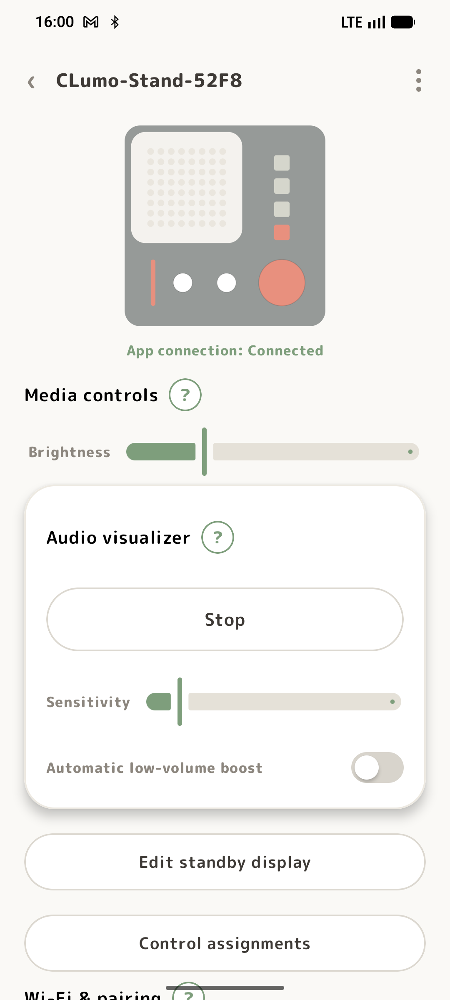
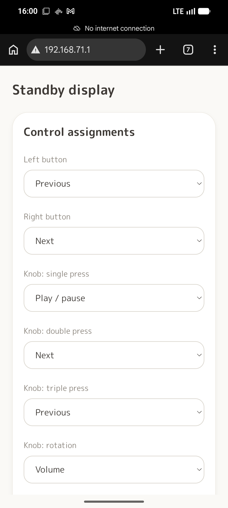

Suggested order: controls → compatibility → Android connection → display editor → control assignments.

English | [日本語](features.ja.md)
For a phone connected to the stand in normal Bluetooth mode. “With app” means a compatible CLumo app is connected and its required service is running—not just installed.
| Feature | Android with CLumo app | Android without app | iOS (iPhone) |
| Volume knob | Yes, BLE HID | Yes, BLE HID | Yes, BLE HID |
| Play / pause | Yes, press the knob | Yes | Yes |
| Previous / next track | Yes, buttons or knob double/triple press by default | Yes | Yes |
| Mute | Assignable; Android execution unverified | Same | Verified on iPhone |
| Voice assistant | Assignable; Gemini and other Android assistants unverified | Same | Siri launch verified |
| Fast forward / rewind | Experimental HID commands; no fixed-second interval; execution unverified | Same | Same |
| Custom control assignments and restore defaults | Android app or Wi-Fi editor | Wi-Fi editor | Wi-Fi editor; iPhone browser unverified |
| Actual-volume LEDs | Yes, app reports volume every 500 ms | No actual-volume feedback | Yes, via AMS; no app needed |
| Audio visualizer | Yes, with capture permission and streaming started | No | No |
| Matrix control animations | Yes | Yes | Yes |
| Three-LED volume sweep | Only when actual volume is unavailable | Yes, when turning the knob | Only when AMS volume is unavailable |
| Saved standby image / animation | Yes | Yes | Yes |
| Android editor: static images and up to 8 frames | Verified on Android hardware | Requires the app | Not available |
| Browser presets and up to 8 editable frames | Yes, Wi-Fi setup mode | Yes, Wi-Fi setup mode | Supported by design; not yet tested on an iPhone browser |
| Brightness / standby settings in Android app | Yes | Requires app | Use the browser editor instead |
- HID media commands depend on the playback app's support.
- Leaving the Android app screen is different from stopping its service. Volume reports can continue in the background. Stopping the visualizer alone does not stop volume reports; a two-second gap in volume reports makes the value unavailable.
- Saved standby content plays on the stand without a phone. Control animations and active visualization take priority. The Android app and browser use the same editor for static images (one frame) and animations (up to eight frames). Android hardware read/write and restoration are verified; cross-editor switching remains unverified.
- Hold both side buttons for 3 seconds to enter Wi-Fi setup, then repeat to return to Bluetooth mode. Bluetooth controls, volume feedback and visualization are unavailable during setup. Preview runs only in the browser; saving does not exit setup.
- Hold the knob for three seconds to pair a **new** phone. Reconnect a registered phone without holding the knob. The new-phone window lasts 60 seconds and accepts both registered and new phones; disconnect the previous phone when switching. Only one phone can connect at a time.
Verified on hardware: Android and iPhone volume control and LED feedback; Android volume expiry/recovery and app GATT reconnection; English setup-page display and settings loading in Android Chrome. Feature support does not imply exhaustive testing of every OS or playback app. iPhone browser editing, AMS reacquisition after iPhone reconnection, Service Changed recovery and long-duration operation remain unverified.


English UI captured on Android; the Web screen was captured in Android Chrome. LEDs in the app illustration are decorative, not actual-volume readings. Orange editor pixels do not specify the physical LED color.